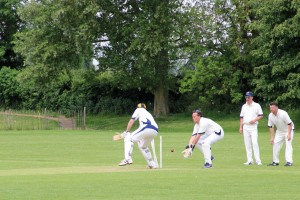
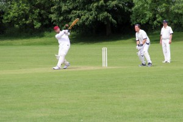

DATE: Sunday 28 May 2017VENUE: AFORMAT: 40 oversRESULT: Lost by 1 wicket
IVCC BATTING
#
BATSMAN
RUNS
HOW OUT
1
F.W.A. Cable-Alexander
16
Hit wicket
2
A.W. Meier
0
Bowled
3
T. Morton
47
Bowled
4
M.E. Law
28
Bowled
5
G.D. Ellis
16
Bowled
6
M.W.R. Law
4
Bowled
7
R.G.D. Berry
3
Bowled
8
M. Cavanagh
13
Bowled
9
J. Arbuckle
0
Caught
10
D.D. Bibb
0
Caught
11
A.J. Troth
5*
Not out
IVCC TOTAL:138 all out (30 overs)
IVCC BOWLING
BOWLER
OVERS
MAIDENS
RUNS
WICKETS
A.J. Troth
6.0
1
24
0
R.G.D. Berry
4.3
1
6
3
D.D. Bibb
5.0
0
25
2
M.W.R. Law
6.0
1
19
1
G.D. Ellis
6.0
0
35
1
J. Arbuckle
2.0
0
23
1
O.T.O. XI TOTAL:139 for 9 (29.3 overs)
MATCH REPORT
Stag gores Villagers in final over thriller
We’ve all been there: you set out for a match, only to realise that you’ve left your whites on a barge run aground on the Thames and that one of your team has to swim out to the boat on the morning of the game to retrieve the kit. So it was for the One Time Only XI, a team playing together (as the name would imply) for the first and only time in celebration of the coming nuptials of one of their group. The heroic Doug made an aquatic excursion on the morning of this game to ensure that the team were appropriately attired for this unique occasion; upon such anecdotes, legends are made. Our own Daylight had his own cracker during the pre-game as well: he lost a glove, and You Won’t Believe What Happened Next.
It seems very appropriate for Iffley Village to be playing against a stag party - we take to the field to play as friends, often sporting heinous hangovers, and aim to have as much fun as we can while doing so. O.T.O. insisted that they would not be very good, and that we should bat first to make sure that the game was as competitive as possible. As usual, Captain Ferg opened up with Chairman Meier, who had spent days behind locked doors in close domestic negotiations to ensure he could participate in this match, and was visibly anticipating the prospect of some easy runs against self-professed “bad” opposition.
After Ferg saw off the first over from the stag himself, Ali faced up to tackle the other opening bowler Brown. And into the Brown stuff Ali went, as he watched in horror as an inch-perfect yorker knocked his leg stump back first ball. Such was his shock that he could only sit on the boundary watching for half an hour before retreating home with his tail between his legs.
This brought Tim “I’ve got a new hat” Morton to the middle, and a period of watchfulness followed as Tim and Ferg looked to stabilise the nascent innings. Left-armer Travis soon replaced the stag at the North end, and disappointed this writer by not being a spin bowler looking to make the ball *Turn*. Instead, he was a seamer who made the ball *Sing*, beating the outside edge of both batsmen like so much *Driftwood* floating on the water. From the other end, Hoopy (outrageously *not* a swing bowler) replaced Brown and almost immediately induced a case of FWACAHK (F.W.A. Cable-Alexander Hari-Kari) by smashing his own stumps with his bat.

17 for 2 off 8; a traditional IVCC start. The next partnership had a rescue job on its hands. Old Man Law, a man whose vocabulary does not contain the compound phrase “quick single”, quickly set about finding the boundary with some powerful blows, finding particular success with several top-spin forehands over wide mid-off. Tim was unusually circumspect at the other end, but did release the shackles in one over from the hapless Hoopy, smashing two fours and a huge six to the mid-wicket fence.

Mark was dismissed for an excellent 28 when he tried to smash JP Dunnett over mid-on and was cleaned up, bringing Garr to the crease. The Rumpshaker wasted no time in maintaining the tempo by taking advantage of the hungover ring-fielders and trying to kill Tim with plenty of quick singles. He and Tim put on 35 together with only a couple of boundaries before Garr, wary of the fact that Bobby Boundaries was primed and ready in the hutch, tried to up the ante and was bowled trying to wipe a full toss from Clarke into the scorer’s table.
IVCC stuttered along for the remainder of the overs, losing wickets at regular intervals. Tim fell for 47 trying to further increase the run rate; Matty Law looked good for 4; Bobby Boundaries (3) himself threatened to launch some of his trademark midwicket missiles but fell to a carbon copy of the ball and shot which dismissed Garr; Cav looked in great touch and played some lovely shots before being very unlucky to edge the ball onto his pads and then see it trickle onto his stumps for 13. In the final overs, there was time for new man Jim Arbuckle (played in his debut performance by Dan Bibb’s mate Pete) to secure an entry into Club Zero, and for Alex to find the boundary before securing a red-inker. Bibb was dismissed on the last ball of the 30 overs to leave IVCC on 138 all out.
After a catering company-provided tea (that’s not a sentence I will write often), IVCC took to the field confident that they could defend their total with the aid of a characteristically slow, low Cutteslowe Park pitch and a slow outfield. Early proceedings suggested they were right to be confident; Alex opened up from the car park end with a maiden before Daylight toppled the off-stump of the stag. In his next over, Bobby Boundaries pole-axed the middle-stump and then lured the next batsman into dollying a catch straight into Dan’s Bibb. OTO were not-very-many for 3, in what one could consider an homage to classic IVCC.
Ferg sought to keep the competition alive and quickly changed his bowlers around. Bibb rebelled against the plan and quickly took two wickets via dubious LBW decisions. Garr was next on and was gutted to find that the generous OTO umpire had been reprimanded by his team and was now in penitent mood, turning down at least one plumb appeal on the dangerous Toby.
At the other end, Jim Arbuckle baffled the batsmen by quite literally bowling it into the pitch; occasionally the ball actually reached the other end and on two occasions Jim managed to scalp the off-guard batsman, with one catch in the deep to Tim and another ball which ricocheted off pretty much every part of the batsman before rolling onto the stumps. A wicket apiece for Garr and Matty saw OTO 9-down and staring down the barrel.
But IVCC didn’t reckon with Toby, who survived those early appeals and put in the best batting performance of the day to steer his side close to victory. With Garr putting in two proper stinker-overs at the death, OTO needed only 3 to win off the last over, and Daylight - the pick of the IVCC bowlers - could only watch as Toby nudged a single past mid-on to win the match with three balls and one wicket to spare.
IVCC will rue their reckless late-innings play with both bat and ball, with runs left on the pitch and given away too easily respectively, but huge credit has to go to OTO who kept going until the end, putting on 75 runs for the last two wickets to secure an impressive win. The whole game was played with fantastic spirit thoroughly in keeping with the ethos of IVCC as a club, and this writer sincerely hopes that post-match discussions of a repeat fixture can come to fruition. OTO might need to consider a new name however…
Gareth “Garr” Ellis, aka The RumpShakerPhotos by Dan Bibb